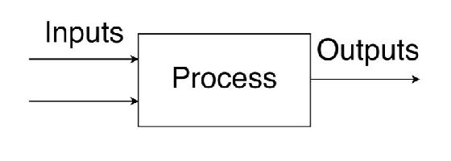

1.4 – Input-Output and Block Flow Diagrams¶
1.4.0 – Learning Objectives¶
By the end of this section you should be able to:
- Understand the difference of an input-output diagram and a block flow diagram.
- Construct a block flow diagram.
- Solve a basic input-output problem.
1.4.1 – Introduction¶
Input-output diagrams are the first step in designing a chemical process. An input-output diagram is the simplest form of flow diagrams used in industry. Input-output diagrams consist of one block with the inputs coming in one end and the outputs going out the other.
The next step in designing a chemical process is constructing a block flow diagram (BFD). A BFD is similar to an input-output diagram except a BFD has multiple blocks. The blocks in a BFD can represent anything from a single piece of equipment to multiple pieces of equipment.
1.4.2 – Input-Output Diagrams¶
Input-output diagrams are the simplest form of flow diagrams. The diagram consists of input arrows, one block for the complete process, and output arrows. For example:
 Attribution: Said Zaid-Alkailani & UBC [CC BY 4.0 de (https://creativecommons.org/licenses/by/4.0/)]
1.4.3 – Block Flow Diagrams¶
Block flow diagrams are what we will mainly focus on later in the course. This model focuses on a section, sections, or a whole chemical plant. This model is also much more detailed than an input-output diagram. Each block can represent a specific step in the process. Here is an example of benzene production:
Attribution: Said Zaid-Alkailani & UBC [CC BY 4.0 de (https://creativecommons.org/licenses/by/4.0/)]
As you can see, there are two inputs, 2,000 kg/h of Toluene, and 164 kg/h of Hydrogen. There are also two outputs, 522 kg/h of Mixed Gas, and 1,642 kg/h of Benzene. In-between the outputs and inputs are the specific unit operations. This example may seem complicated but by the end of this course it will be a walk in the park.
1.4.4 – Problem Statement¶
Question¶
Stream 1 Inputs 1,700 kg/h of water and stream 2 inputs 1,000 kg/h of flour. Stream 3 outputs 700 kg/h of steam. How much bread comes out of stream 4?
Answer¶
First draw your BFD, in this case it will be an input-output diagram.
Attribution: Said Zaid-Alkailani & UBC [CC BY 4.0 de (https://creativecommons.org/licenses/by/4.0/)]
Then write the mass balance and solve.
In [ ]: